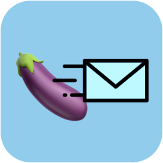

<nav class="navbar navbar-expand-lg navbar-dark bg-dark">
    
    <a class="navbar-brand" routerLink="/">Mis Correos</a>
    <button class="navbar-toggler" type="button" data-toggle="collapse" data-target="#navbarSupportedContent" aria-controls="navbarSupportedContent" aria-expanded="false" aria-label="Toggle navigation">
      <span class="navbar-toggler-icon"></span>
    </button>
  
    <div class="collapse navbar-collapse">
      <ul class="navbar-nav mr-auto">
        <li class="nav-item active">
          <a class="nav-link" routerLink="/">Home <span class="sr-only">(current)</span></a>
        </li>
        <li class="nav-item active">
          <a class="nav-link" routerLink="/correos">Inbox <span class="sr-only">(current)</span></a>
        </li>
        <li class="nav-item active">
          <a class="nav-link pointer" (click)="abrir()">Escribir nuevo correo <span class="sr-only">(current)</span></a>
        </li>
        
      </ul>
    </div>
  </nav>


  <app-nuevo-correo *ngIf="nuevoMensaje" (cerrar)="cerrar()"></app-nuevo-correo>